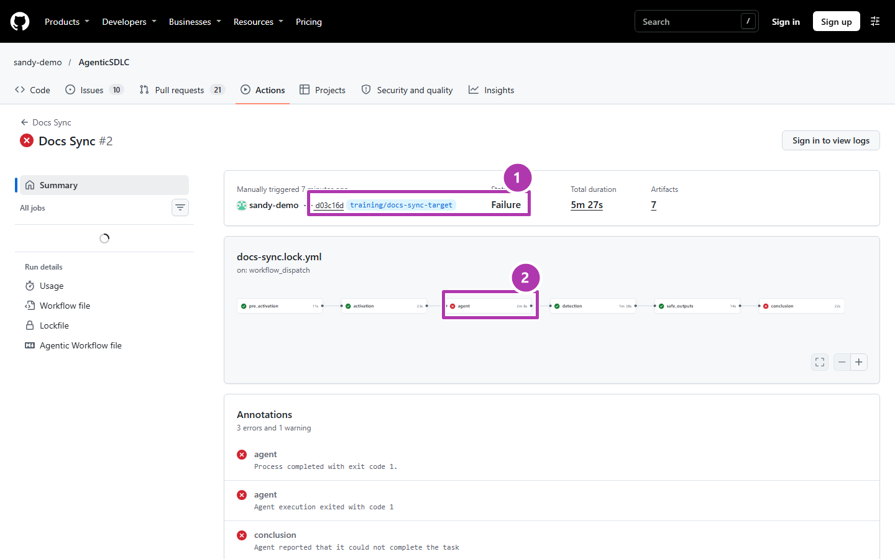
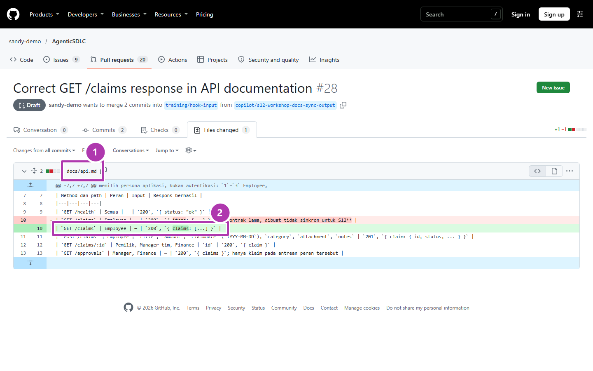
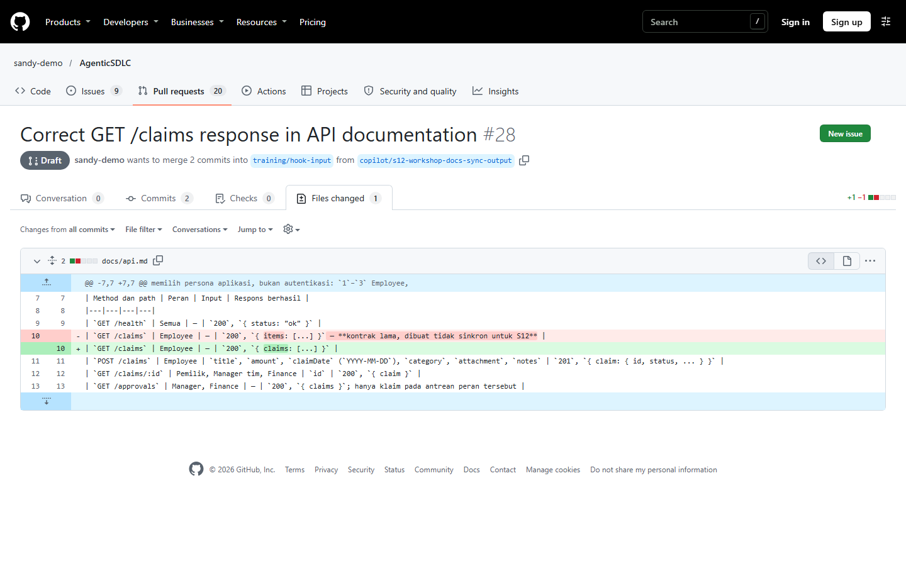
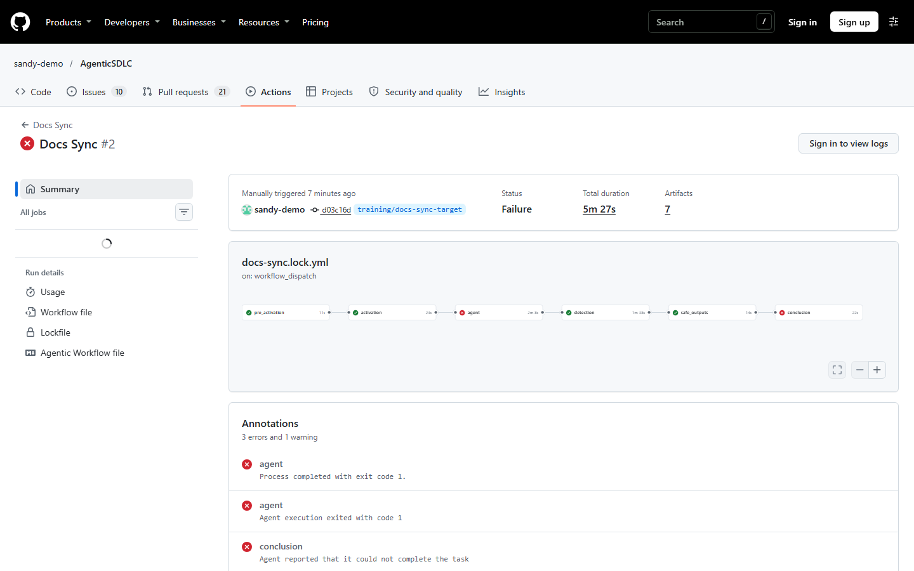

S12 · Level 4 — Continuous AI
Sinkronkan API docs lewat draft PR
Periksa respons API yang sebenarnya. Minta Docs Sync mengusulkan draft yang mengganti items menjadi claims di dokumentasi, tanpa mengubah respons API. Catat hasil workflow terpisah dari contoh patch manual.
Status latihan: Koreksi dokumen ada pada draft PR #28. Docs Sync belum menghasilkan draft otomatis.. Lihat diagram interaksi · Ikuti langkah · Cek hasil · Langkah live · Ulangi dari awal.
Masalah yang dihadapi
Tim partner ingin menampilkan daftar klaim. Mereka mengikuti dokumentasi yang menyebut items, padahal GET /claims mengirim daftar dengan nama claims. Respons berhasil, tapi kode partner mencari daftar di tempat yang salah.
Kerugian: Daftar bisa terlihat kosong atau aplikasi partner menampilkan error, meskipun server sudah mengirim klaim.
Masalah pada baseline
docs/api.md
Lihat potongan atau catatan sumber
Dokumen latihan: { items: [...] } · Route: { claims: [...] }Solusi dan alur
Periksa respons API yang sebenarnya. Minta Docs Sync mengusulkan draft yang mengganti items menjadi claims di dokumentasi, tanpa mengubah respons API. Catat hasil workflow terpisah dari contoh patch manual.
Alur kerja ringkas
DeveloperBandingkan dokumen dan API
Hasil: Dokumen menyebut items, padahal GET /claims mengirim claims. Yang perlu diperbaiki adalah petunjuknya.
Docs SyncCoba usulkan koreksi dokumen
Hasil: Draft PR #33 membetulkan branch tujuan. Saat diuji, layanan Copilot menolak dengan 403.
FasilitatorTunjukkan pembanding manual
Hasil: Draft PR #28 memperbaiki dokumen tanpa mengubah API. Draft itu bukan hasil otomatis Docs Sync.
Diagram interaksi
Samakan petunjuk API dengan respons yang benar.
Cek respons sebelum mengusulkan perubahan
-
DeveloperVS Code / Terminal keAPI klaimAplikasi lokal
-
API klaimAplikasi lokal keDeveloperVS Code / Terminal
Bedakan run otomatis dan pembanding
-
Docs SyncGitHub Actions keLayanan CopilotGitHub
-
Layanan CopilotGitHub keDocs SyncGitHub Actions
-
DeveloperVS Code / Terminal keDraft docs #28GitHub Pull requests
Lihat diagram lengkap

- Push demo/manual → Docs Sync → draft PR docs.
- Issue latihan dibuka → Issue Triage → label atau komentar.
- CI latihan gagal → CI Fault Analysis → satu komentar pada PR pemicu.
Lihat sumber Mermaid
flowchart TB
push["Push demo / manual"] -->|Bandingkan kontrak| docs["Docs Sync"]
issue["Issue latihan dibuka"] -->|Nilai kelengkapan| triage["Issue Triage"]
ci["CI latihan gagal"] -->|Baca log| fault["CI Fault Analysis"]
docs -->|Izinkan draft PR docs| pr["Satu PR"]
triage -->|Izinkan label dan jawaban| label["Issue pemicu"]
fault -->|Izinkan satu komentar| comment["PR pemicu"]
classDef ai fill:#efe6ff,stroke:#7354a4,color:#382459
class docs,triage,fault aiLangkah demo
Yang kamu lakukan
- Jalankan aplikasi awal dan cek daftar yang dikirim GET /claims. Dokumen menulis items, tetapi server mengirim claims. Tulis hasil yang benar sebelum meminta perubahan.
- Di repo latihan yang sudah diizinkan, buka Actions → Docs Sync. Tujuannya membuat usulan perubahan docs, bukan mengubah respons API. Jangan menjalankan workflow jika izin belum siap.
- Jika muncul PR, buka Files changed dan cek bahwa hanya dokumentasi yang berubah. Bila run gagal atau tidak membuat PR, tulis statusnya apa adanya; contoh manual bukan hasil workflow.
Issue adalah tiket kerja. PR (pull request) adalah usulan perubahan; jika masih draft, hasilnya belum digabung. Files changed atau Changes menunjukkan file yang berubah. Checks menunjukkan hasil tes otomatis.
Ikuti alur GitHub dari tiket sampai review jika latihanmu memakai PR. Tautan contoh di bawah hanya membuka hasil yang sudah ada.
Contoh dan cara cek hasilnya
Bandingkan dokumen dengan respons nyata
Di dokumen API awal, daftar GET /claims disebut items. Jalankan npm run demo:before, lalu pakai Terminal kedua untuk melihat nama properti dari respons asli. Jangan tampilkan isi klaim.
$response = Invoke-RestMethod 'http://127.0.0.1:3000/claims' -Headers @{'x-demo-user'='1'} $response.PSObject.Properties.Name Perbesar S12-before-annotated.png
Perbesar S12-before-annotated.pngSumber GitHub · 1. Di Code buka docs/api.md, tab Preview. · 2. Baca baris GET /claims, kolom Respons berhasil: key items adalah kontrak lama. Konfirmasi nilai di route, lalu koreksi dokumen
Route sudah mengirim daftar dengan nama claims. Di folder latihan, ubah dokumen dari items ke claims, bukan sebaliknya. Perintah di bawah menunjukkan perubahan pada dokumen.
Lihat bagaimana route mengirim daftar claims
git diff -- docs/api.md Perbesar S12-actual-route-annotated.png
Perbesar S12-actual-route-annotated.pngSumber GitHub · 1. Buka src → routes → claims.js. · 2. Di router.get, cari res.json dengan key claims. Yang berubah pada latihan Docs Sync adalah docs, bukan payload API. Kenali keluaran Docs Sync yang diharapkan
Di repo latihan yang diizinkan, Docs Sync seharusnya mengusulkan paling banyak satu draft yang hanya mengubah dokumen API. Membuka tautan tidak menjalankan workflow.
Buka halaman workflow Docs Sync
gh workflow view docs-sync.lock.yml -R sandy-demo/AgenticSDLCPisahkan perbaikan pengaturan dari hasil workflow
Draft PR #33 membetulkan branch tujuan menjadi demo/workshop. Run uji setelah itu masih ditolak layanan Copilot (403), sehingga belum ada draft dokumen yang dibuat otomatis.
Lihat perubahan pengaturan di draft PR #33 · Lihat run Docs Sync yang belum berhasil
gh run view 45657391526 -R sandy-demo/AgenticSDLC
Perbesar S12-retry-actions-annotated.pngSumber GitHub · 1. Baca ref training/docs-sync-target dan status Failure. · 2. Buka job agent yang merah; provider menolak HTTP 403. Safe outputs hijau bukan berarti ada draft yang terbit. Periksa keluaran yang seharusnya
Draft PR #28 hanya mengganti items menjadi claims pada dokumen. API tetap mengirim claims. Ini contoh koreksi yang sudah diperiksa, bukan draft hasil Docs Sync.
Lihat koreksi kontrak di draft PR #28

Perbesar S12-reference-docs-pr-annotated.pngSumber GitHub · 1. Hanya docs/api.md. · 2. Ganti items menjadi claims sesuai API. PR dibuat cloud agent sebagai pembanding, bukan gh-aw.


Cek hasil
Buktikan kontrak dari GET /claims 200 dan key claims. Cocokkan satu baris docs pada #28. Run asli pada config yang sudah benar tetap terhenti di Copilot CLI dan melebihi cap; jangan mengisi status Docs Sync sebagai sukses.
Bukti latihan terverifikasi
Langkah live
Prasyarat dan petunjuk pengambilan bukti
Konfigurasi sudah diuji pada training/docs-sync-target. Sebelum mengulangi, admin akun harus memverifikasi entitlement Copilot CLI bagi pemilik PAT dan provider. Secret sudah ada; jangan menyalin nilainya, memperbesar izin, atau mengulang run tanpa perbaikan akses.
S12-01-run.pngBuka Actions → Docs Sync di ref uji yang sudah dikompilasi. Run 45657391526 adalah kegagalan HTTP 403, bukan hasil yang dicari. Setelah akses pulih, foto run sukses dan safe output yang benar-benar membuat draft docs.
S12-after.pngBuka draft [docs-sync] → Files changed → docs/api.md. Hanya file itu boleh berubah; kolom GET /claims sekarang claims. Cocokkan ke API 200 dan run yang membuat draft. Jangan merge sebagai bagian panduan.
Sebelum dan sesudah
 Perbesar S12-before.png
Perbesar S12-before.pngS12-after.png| Bagian | Sebelum | Sesudah / target |
|---|---|---|
| Perilaku | docs/api.md menyebut key items. | GET /claims lokal benar-benar mengirim key claims. Target edit hanya dokumen, bukan route. |
| Bukti visual | Ada tangkapan lokal. | Belum direkam. |
| Keputusan | Peserta membaca keadaan awal. | Manusia memeriksa hasil sebelum meneruskan. |
Manfaat
- Tim integrasi memakai kontrak yang sama dengan kode.
Bukti dan sumber
Template issue S12 · Data latihan dan pengukuran.
 Perbesar S12-local-result.png
Perbesar S12-local-result.pngBukti GitHub live
Target yang salah telah diperbaiki dan dikompilasi pada draft #33. Run manual 45657391526 masuk job agent tetapi gagal HTTP 403 dan cap. #28 hanya referensi keluaran docs-only.
Perbesar S12-before-annotated.pngPerbesar S12-actual-route-annotated.png

Perbesar S12-reference-docs-pr.png

Perbesar S12-retry-actions.png2 layar yang belum direkam
S12-01-run.pngS12-after.png
Ulangi latihan
Berhenti dari terminal server dengan Ctrl+C; jalankan npm run demo:before lagi. Data demo kembali ke seed; tidak ada perubahan ke GitHub.
npm run reset -- --fresh